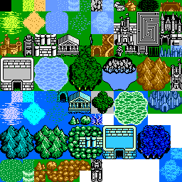
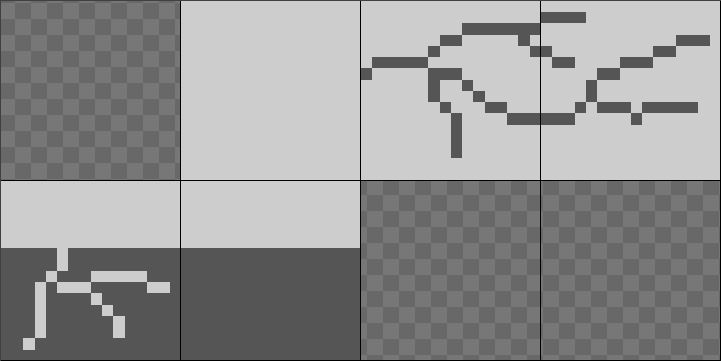
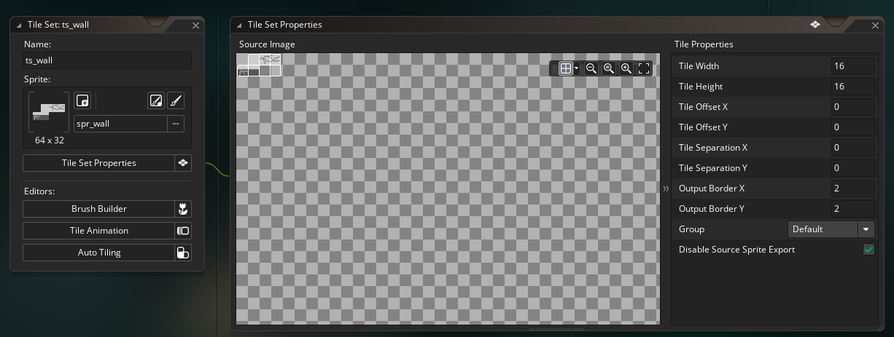
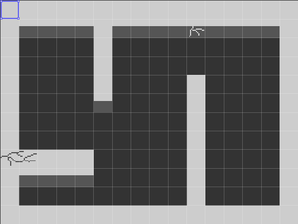

Playing with Tilesets
Tiles?
Tiles and tile sets are these really useful tools offered by GMS which come in real handy during development, usually in the level development department. Say for example you wanted to create a top-down puzzle game, and you need to build walls. One way to go about this would be to create different sprites and objects for each kind of wall, and then “paint” the walls into the room. While it would work, that many objects would take up massive amounts of computing power and lead to a crash. Instead, you could create a single sprite having all the different kinds of walls, create a tile set exclusively for walls, and use this to create the level. The advantage of using tile sets is that they, unlike objects, have no other properties for the game to compute other than what they look like which means faster computing. There’s also some pretty useful functions for setting and manipulating these tile sets, which make them the proper choice for level creation.
Creating tiles
For the wall tile set, the first thing to do would be to create a sprite, like so–
This is a 64 x 32 sprite with a 16 x 16 grid laid over it. Each 16 x 16 cell is painted with a different kind of wall to be used in the game. While creating a sprite, each tile should be of the same size, in this case 16 x 16. Another point to note is that the top left tile should be empty. GameMaker treats it as an “empty tile” that can be used to erase placed tiles, so there’s really no point in drawing anything there.
In the Resources panel is the Tile set dropdown menu in which we create a new tile set. To this, we assign the previously made wall sprite.
In the Tile Properties menu, change the tile width and height to those of the tiles. The offset and separation values are to be changed only if there is an equal separation between each tile in the sprite.
In the room editor, in the Layers panel, create a new Tile layer and assign the tile set to it. Once the newly created tile layer is selected, a new panel tab will pop up on next to the Resources panel, from which the required tile can now be selected and painted onto the room.
And that’s basically all there is to creating tile sets in GMS. To further customize your tiles, there are a few buttons on the Quick Buttons panel using which tiles can be selected as a group, resized, rotated and so on. This saves the trouble of duplicating the same tile in different orientations in the tile sprite. Erasing a tile can be done by either right-clicking or painting over them with the top left tile or the “erase” tile of the tile set.
Interaction
Tile sets can also be interacted with. For example, the following code in the Step event of the player object could be used for collision in a top-down RPG.
var lay_id = layer_get_id("Wall");
var map_id = layer_tilemap_get_id(lay_id);
if(keyboard_check_pressed(vk_right)) {
if(tilemap_get_at_pixel(map_id, x, y))
x -= 16;
}
The above code first stores the layer ID of the Wall layer and then stores the tilemap data from the obtained data in map_id. Considering the player moves 16 pixels when a direction button is pressed, if the player moves towards the right and into a wall tile, it is moved back 16 pixels giving the tile an actual wall effect.
While working with tiles, it would be best to have tiles having similar properties into one tile set. Say you wanted the wall tile with the cracks on it to break when the player moves into it. A rubble tile above which the player can move would replace the wall tile. In the example above, the tilemap_get_at_pixel function checks if the tile at (x, y) is from the wall tilemap. This means that the sprite for the rubble cannot be drawn in the sprite with the wall tiles as it would be treated the same as a wall. So it is important to have different tile sets for different kinds of tiles, but also not to have so many that it gets downright confusing.